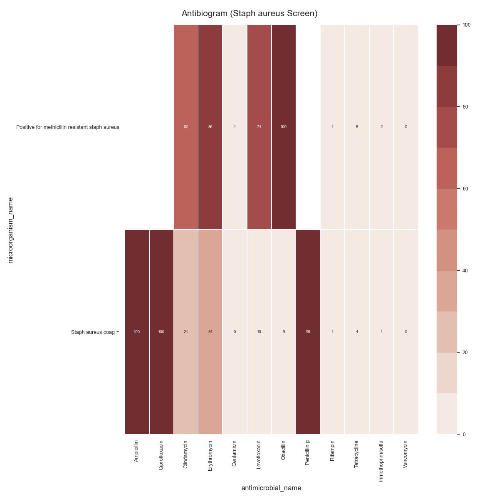

Note
Click here to download the full example code
SARI - Antibiogram
Todo
Explain and Simplify
- 
Out:
SARI (overall):
sensitivity P intermediate resistant sensitive freq sari
specimen_code microorganism_name antimicrobial_name
ABSCESS Achromobacter species Cefepime 0.0 0.0 1.0 0.0 1.0 1.0000
Ceftazidime 0.0 1.0 0.0 0.0 1.0 1.0000
Ceftriaxone 0.0 0.0 1.0 0.0 1.0 1.0000
Ciprofloxacin 0.0 0.0 0.0 1.0 1.0 0.0000
Gentamicin 0.0 1.0 0.0 0.0 1.0 1.0000
... ... ... ... ... ... ...
URINE Viridans streptococci Clindamycin 0.0 2.0 0.0 8.0 10.0 0.2000
Erythromycin 0.0 0.0 4.0 6.0 10.0 0.4000
Levofloxacin 0.0 0.0 0.0 1.0 1.0 0.0000
Penicillin g 0.0 2.0 0.0 9.0 11.0 0.1818
Vancomycin 0.0 0.0 0.0 11.0 11.0 0.0000
[4307 rows x 6 columns]
12 # Libraries
13 import sys
14 import glob
15 import numpy as np
16 import pandas as pd
17 import seaborn as sns
18 import matplotlib as mpl
19 import matplotlib.pyplot as plt
20
21 # Import own libraries
22 from pyamr.core.sari import SARI
23 from pyamr.datasets.load import load_data_mimic
24
25 # -------------------------
26 # Configuration
27 # -------------------------
28 # Configure seaborn style (context=talk)
29 sns.set(style="white")
30
31 # Set matplotlib
32 mpl.rcParams['xtick.labelsize'] = 9
33 mpl.rcParams['ytick.labelsize'] = 9
34 mpl.rcParams['axes.titlesize'] = 11
35 mpl.rcParams['legend.fontsize'] = 9
36
37 # Pandas configuration
38 pd.set_option('display.max_colwidth', 40)
39 pd.set_option('display.width', 300)
40 pd.set_option('display.precision', 4)
41
42 # Numpy configuration
43 np.set_printoptions(precision=2)
44
45 # --------------------------------------------------------------------
46 # Main
47 # --------------------------------------------------------------------
48 # Load data
49 data, antibiotics, organisms = load_data_mimic()
50
51 # Count records per specimen code
52 specimen_code_count = data \
53 .groupby('laboratory_number').head(1) \
54 .specimen_code.value_counts(normalize=True) \
55 .sort_values(ascending=False)
56
57 # Filter most frequent specimens
58 data = data[data.specimen_code.isin( \
59 specimen_code_count.index.values[:5])]
60
61 # Create sari instance
62 sari = SARI(groupby=['specimen_code',
63 'microorganism_name',
64 'antimicrobial_name',
65 'sensitivity'])
66
67 # Compute SARI overall
68 sari_overall = sari.compute(data,
69 return_frequencies=True)
70
71 # Show
72 print("SARI (overall):")
73 print(sari_overall)
74
75 # -------------------------------------------
76 # Plot
77 # -------------------------------------------
78 # Reset
79 sari_overall = sari_overall.reset_index()
80
81 # Loop
82 for specimen, df in sari_overall.groupby(by='specimen_code'):
83
84 # -------------
85 # Create matrix
86 # -------------
87 # Filter
88 matrix = df.copy(deep=True)
89 matrix = df.reset_index()
90 #matrix = matrix[matrix.freq > 100]
91
92 # Pivot table
93 matrix = pd.pivot_table(matrix,
94 index='microorganism_name',
95 columns='antimicrobial_name',
96 values='sari')
97
98 # ------------
99 # Plot Heatmap
100 # ------------
101 # Create figure
102 f, ax = plt.subplots(1, 1, figsize=(12, 12))
103
104 # Create colormap
105 cmap = sns.color_palette("Reds", desat=0.5, n_colors=10)
106
107 # Specify cbar axes
108 # cbar_ax = f.add_axes([.925, .3, .05, .3])
109
110 # Plot
111 ax = sns.heatmap(data=matrix*100, annot=True, fmt=".0f",
112 annot_kws={'fontsize': 7}, cmap=cmap,
113 linewidth=0.5, vmin=0, vmax=100, ax=ax,
114 #cbar_ax=cbar_ax,
115 xticklabels=1, yticklabels=1)
116
117 # Configure axes
118 #ax.set(aspect="equal")
119
120 # Set rotation
121 plt.yticks(rotation=0)
122
123 # Add title
124 plt.suptitle("Antibiogram (%s)" % specimen, fontsize=15)
125
126 # Tight layout
127 plt.tight_layout()
128
129 # Show
130 plt.show()
Total running time of the script: ( 0 minutes 17.164 seconds)